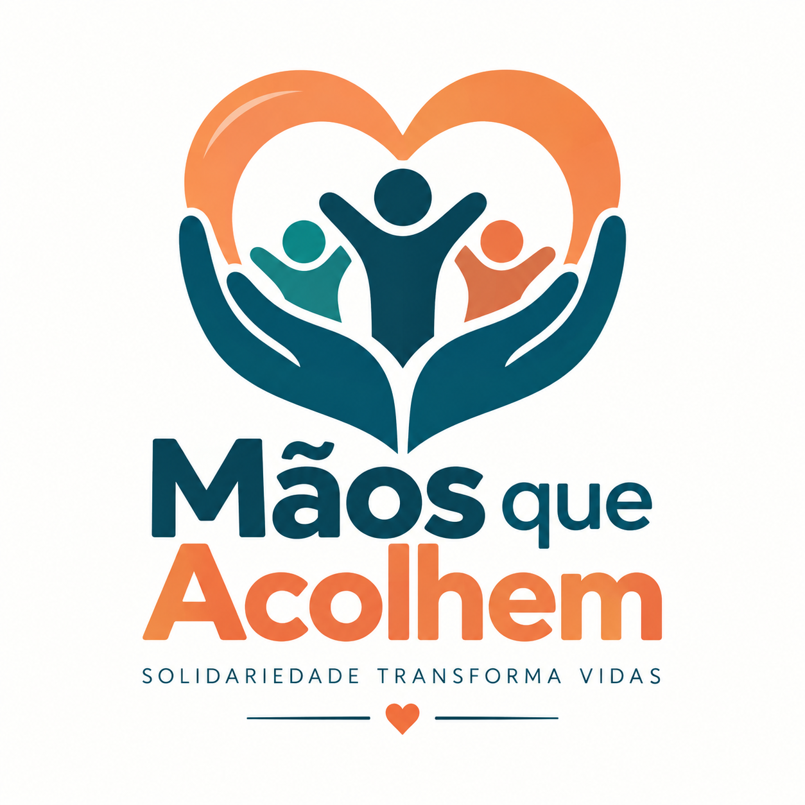

Missão
Promover ações de solidariedade e acolhimento para pessoas que precisam de apoio.

Solidariedade, acolhimento e participação para transformar vidas.
Conheça nossos projetosA Mãos que Acolhem é uma proposta de ONG universitária criada para incentivar ações solidárias, voluntariado e apoio à comunidade.
Promover ações de solidariedade e acolhimento para pessoas que precisam de apoio.
Fortalecer a participação comunitária e incentivar uma sociedade mais colaborativa.
Respeito, empatia, responsabilidade, inclusão e solidariedade.
Organização e distribuição de alimentos, roupas e materiais essenciais.
Atividades educativas e oficinas para compartilhar conhecimentos.
Ações de escuta, orientação e apoio à comunidade.
Exemplos de retorno visual após ações realizadas pelo usuário.
Mensagem rápida e não obstrutiva apresentada após uma ação.
Janela de destaque usada para apresentar uma informação complementar.
Os componentes se reorganizam para telas menores, mantendo leitura, contraste e área adequada para toque.
📱 MobileConheça os projetos ou preencha o cadastro para demonstrar seu interesse.
Quero participar